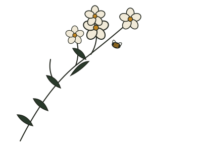
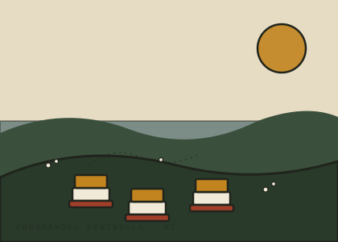

Where it comes from
Mānuka (Leptospermum scoparium) grows wild across New Zealand, and it's the nectar of its flower that gives the honey its distinctive, tested compounds. New Zealand mānuka honey comes from that single species; honey labelled Australian mānuka can draw on several related Leptospermum species, which is one reason grading and origin both matter to buyers.

What MGO and UMF actually tell a buyer
MGO is a direct lab measurement of methylglyoxal, the compound most associated with mānuka's distinctive properties, expressed in mg/kg.
UMF (Unique Mānuka Factor) is a certification standard that combines several markers, including MGO, into a single rating buyers and regulators recognise internationally.
Every RILEY mānuka line is tested and rated before it's packed, so the number on the label matches what's in the jar.
A longstanding taonga
Mānuka has long held a place in Māori tradition, where the plant is regarded as a taonga — a treasure. Infusions from its leaves were used in traditional healing practice, well before mānuka honey became a global export. Our own honey production sits inside that much longer New Zealand story, and we don't take that lightly.

Pest-free hives, working land
Our hives sit in native bush and coastal reserve blocks around Whitianga and Matarangi. New Zealand's biosecurity rules keep local bees free of several pests and diseases found in most other beekeeping countries, including European foulbrood, small hive beetle, and tropilaelaps mite.
Outside of the mānuka flow, the same hives are moved to pollinate avocado and orchard blocks in the district — our bees do double duty as working farm partners, not just honey producers.
We keep our own claims to what's actually tested: the MGO figure on a jar is a direct lab measurement, and the UMF rating is issued by an independent certification body — not marketing language. If you'd like to see certification documentation for a particular batch, ask when you enquire.